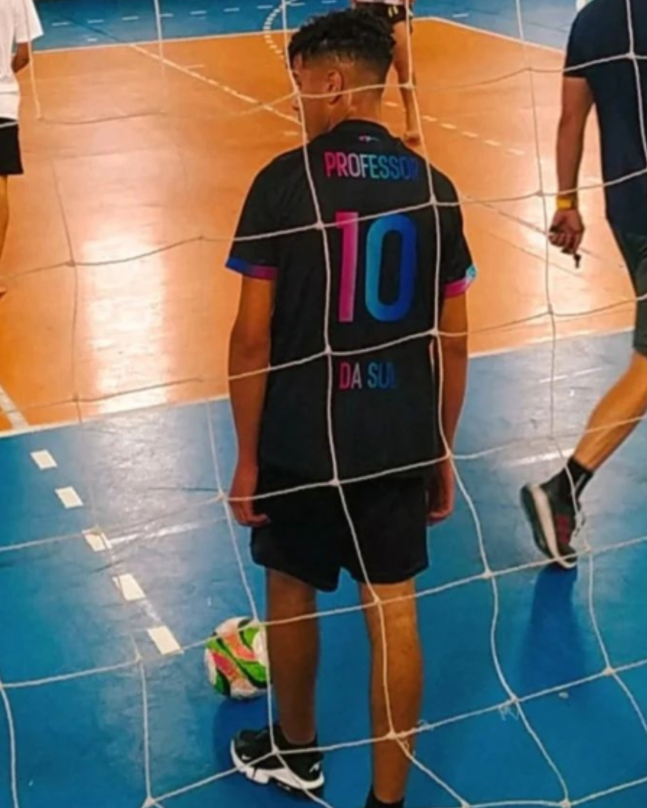

Erick Luigi
- Posição: Meio campista
- Idade: 16 anos
- Clube Atual: Sem clube
Técnica Individual
- Controle de Bola: Não tenho mas consigo entrar na mente do adversário.
- Drible: Só passe, de 1m para trás.
- Passe: Sem muita pressão, eu acerto.
- Finalização: Tenho medo de goleiros.
Inteligência Tática
- Posicionamento: Sou melhor no banco.
- Leitura de Jogo: Rei do gatorade express.
- Tomada de Decisão: Sempre escolho o errado, mas acho que é certo.
Físico e Condicionamento
- Resistência: Só aguento 2min e sem sol.
- Velocidade: Sou rápido como uma tartaruga.
- Força: Pareço o thor, sem martelo.
Atitude e Comportamento
- Disciplina: Nenhuma.
- Trabalho em Equipe: Prefiro jogar sozinho.
- Atitude Competitiva: Eu mato se eu perder.
Adaptação a Situações de Jogo
- Comportamento sob Pressão: Xingamentos resolve sempre.
- Ajuste a Sistemas de Jogo: Se a porrada estancar, eu estou dentro.
Habilidade Mental
- Foco: Sempre focado em prejudicar a equipe.
- Resiliência: Só nas vitórias.
- Confiança: ZERO.
Fair Play
- Atitude Ética: Sou garçom dos adversários.
Comportamento Fora de Campo
- Atitude Acadêmica: Nunca estudei.
- Respeito: Eu que mando, todos devem me respeitar.
Observações Adicionais
Eu mereço essa vaga por que sou o melhor do mundo, SIIIU RESPEITA O PAI.